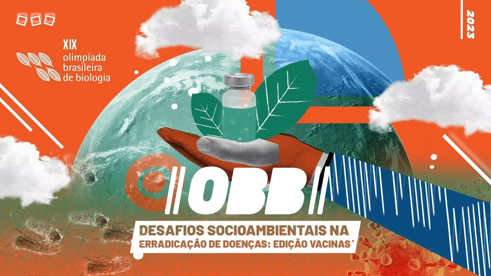

O gabarito definitivo já se encontra disponivel no site, com o acesso liberado para todos.
As olimpiadas brasileiras de bilogia, manteve a sua tradição de aplicação e, novamente, trouxe um tema um novo central para a aplicação do desafio. Contudo, o tems dessa ano não foi surpresa para ninguém, principalmente após todos as polêmicas e intrigas, relacionadas às vacinas imunizantes do Sars-Cov2 (o famoso vírus da Covid-19). Para resgatar a importâmcia da compreensão do corpo humano e, das maneiras como as vertentes da natureza biológica agem sobre nós, o comite das olímpiadas trouxe o tema das "Vacinas" e, infectologia como pauta principal das questões no vestibular.
Sendo assim, a prova da fase 1A, aplicada com uma folha de respostas contendo 30 questões, foi divididq com as duas primeiras folhas de respostas, sendo reservada quase que exclusivamente para esse tema, sendo respectivamente 15 questões. Dessa forma, não apenas sobre vacinas, mas também sobre diversos assuntos abordando desde botânica até as "leis da genética e teroria da evolução, esquematizadas por Darwin e Lamark.
Mas uma coisa é certa, essa prova pode ser considerada uma das mais dificeis entre todos os desafios de olimpiadas acadêmicas, é preciso muita preparação pré prova e muita atenção na hora de reponder, pois as questões elaboradas são dedicadas para reter apenas os mais experts na área, fazendo até os mais confiantes ficarem em duvida na hora de assinalar a questão. Pois bem, após concluir, todos aguaradam ansiosos para verificar os resultados, afinal, toda essa tensão e esforços devotadas, tem que servir para alguma coisa, além disso, todos querem alcançar a almeijada proxima fase. Sendo assim, você pode verificar o gabarito e as respostas corretas da prova da fase 1A. Mas lembre-se, esse é o gabarito provisório, embora não haja conflitos ara serem acertados, é possivel que a bancada faça eventuais mudanças, alem disso, ainda não foi divulgado a média de corte para avançar ruma à fase 2A, masem breve, eles disponibilizrão para nós.


Sandra
Gente, posso falar? E eu que estava aqui na Baranoze né... aí eu tinha que fazer uma atividade de redação como meu filho, o Leozinho. Mas eu não sei nada de redação, ainda bem que tinha esse site aqui para me salvar ein... Ain, pareço uma louca né?! Não, sério, eu não serveria para esse tal de ENEM.
5/5
13/03/2023